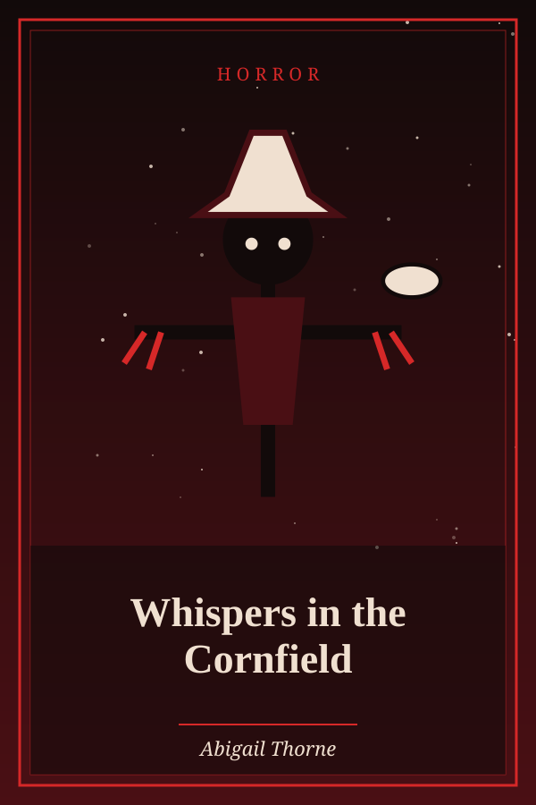

The Sick Lion
Genre: Thriller
Synopsis
An old lion pretends to be sick to lure visitors into his den, until a fox notices the tracks.
Chapter 1: The Sick Lion
A Lion, unable from old age and infirmities to provide himself with food by force, resolved to do so by artifice. He returned to his den, and lying down there, pretended to be sick, taking care that his sickness should be publicly known. The beasts expressed their sorrow, and came one by one to his den, where the Lion devoured them. After many of the beasts had thus disappeared, the Fox discovered the trick and presenting himself to the Lion, stood on the outside of the cave, at a respectful distance, and asked him how he was. “I am very middling,” replied the Lion, “but why do you stand without? Pray enter within to talk with me.” “No, thank you,” said the Fox. “I notice that there are many prints of feet entering your cave, but I see no trace of any returning.”
He is wise who is warned by the misfortunes of others.